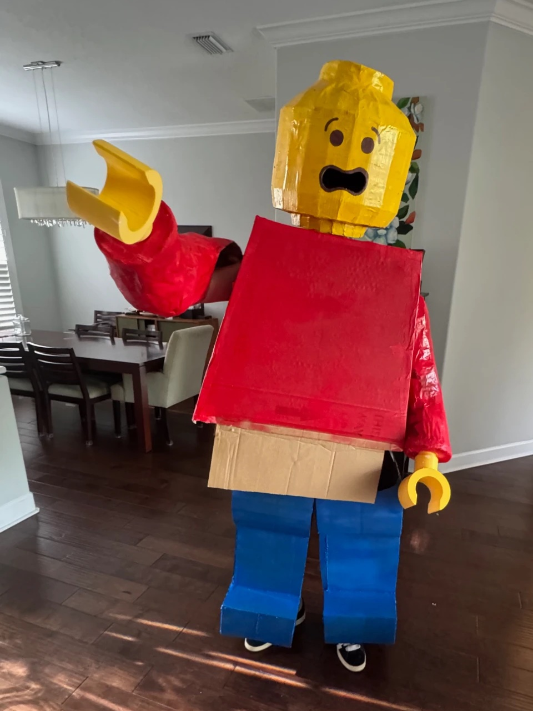
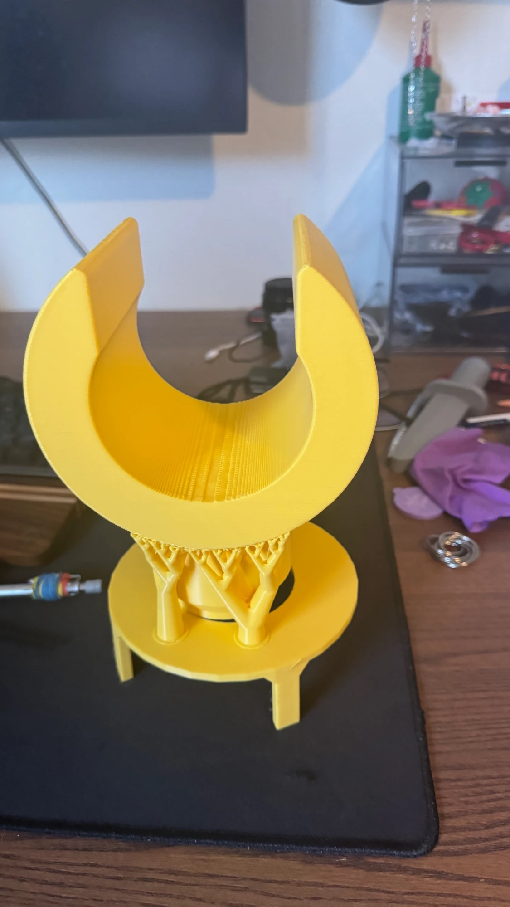
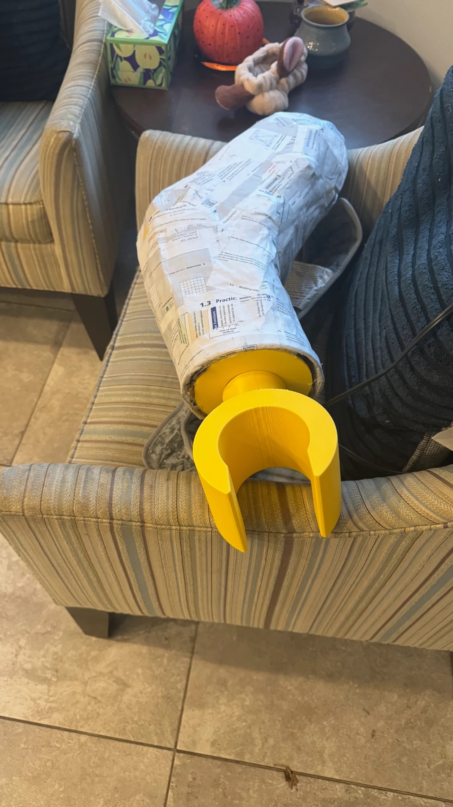
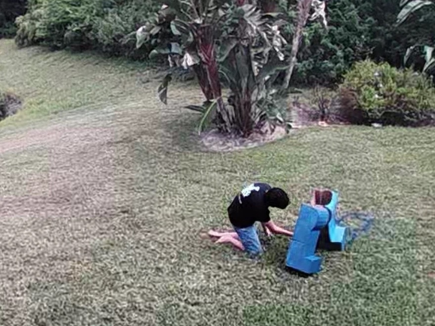
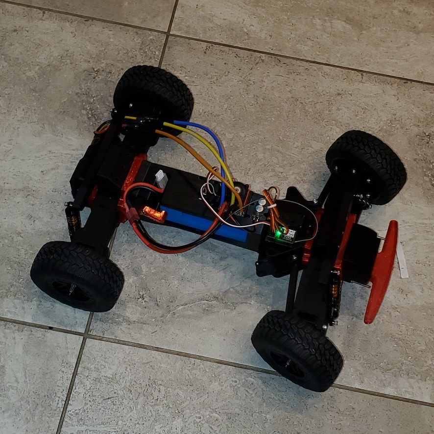
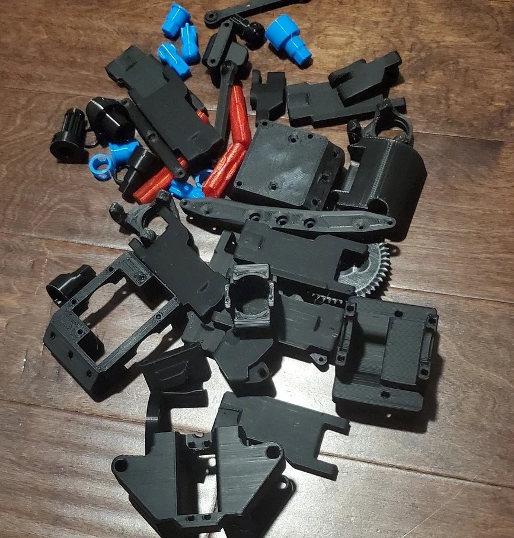
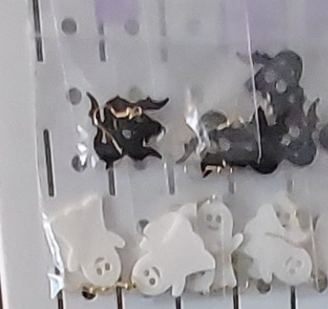
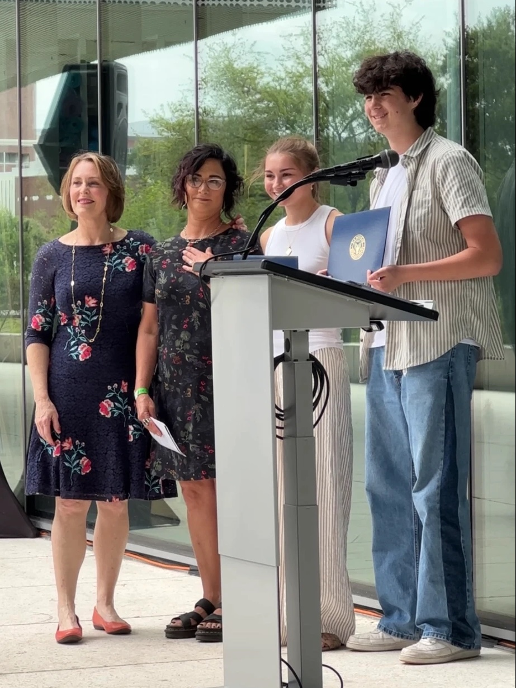
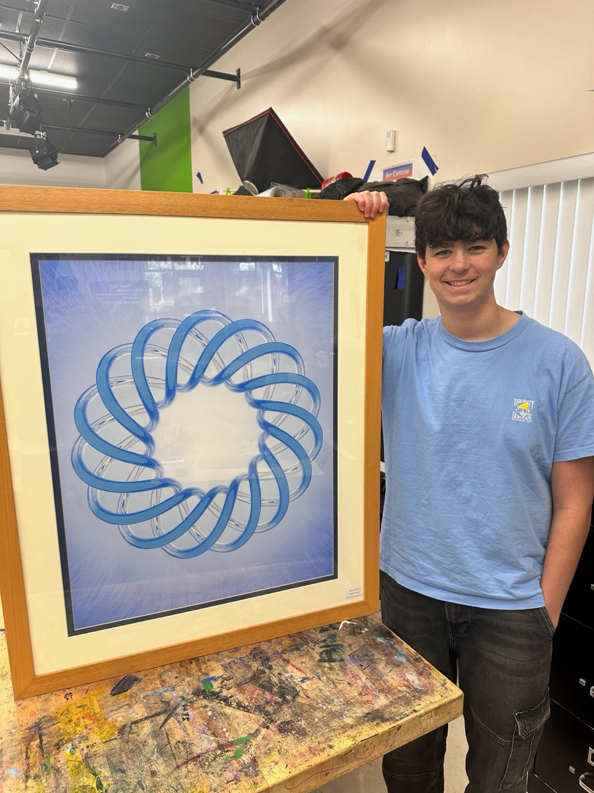
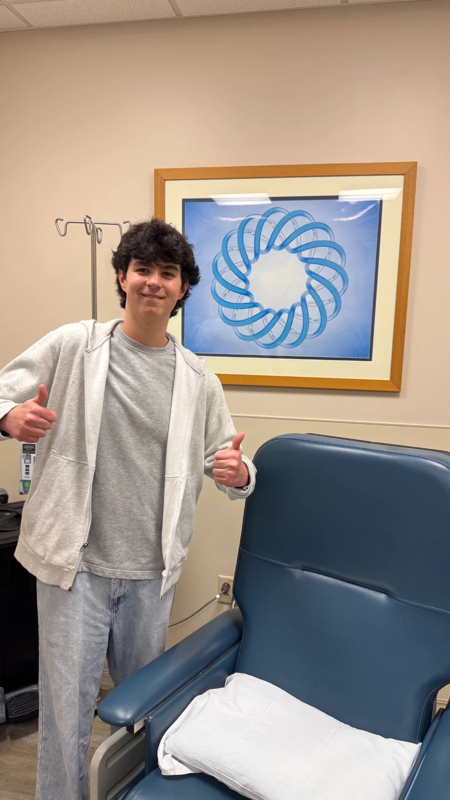

LEGO Emmet Costume
A wearable LEGO minifigure with 3D-printed hands.
- Height7 ft tall
- Hands3D printed, FDM
- ArmsPapier-mâché
- Body and legsPainted cardboard


In action
Process



RC Car
Chassis rebuilt across several failed versions.
- Medium3D printing
- ToolsBlender, FDM printing

Process

RC Battleship
Printed in sections, assembled and finished by hand.
- Medium3D printing
- ToolsBlender, FDM printing
Process
Halloween Earrings
Printed Halloween earrings in black and white.
- Medium3D printing

Process
SD40-2 Locomotive
A Santa Fe SD40-2 (number 5104), modeled in Blender and ZBrush.
- Medium3D modeling
- ToolsBlender, ZBrush
Process
Nature
Animals, flowers and the night sky.
Music
Live guitar, shot in hard light.

Marching Band
Game night with the band.

Cars
Car meets and sunny parking lots.

Places
Light, windows and skylines.

“Frozen Peaks”
Digital artwork, shown at the Tampa Museum of Art.
- MediumDigital art
- AwardHonorable Mention, 2026

Artist statement
This piece explores realism through the detailed rendering of snowy trees and a sharp mountain landscape. I was inspired by online digital renders that blur the line between computer generated imagery and real photography. Using Blender, I originally planned this scene as a backdrop for a realistic railcar model, but as the environment developed, the landscape itself became strong enough to stand alone. I chose to keep the focus on the natural setting to highlight the textures, lighting, and atmosphere of that cold winter. When viewing this artwork, I want the audience to feel as if they’re looking at a genuine photograph—one that brings back memories of cold, snowy winters and the quiet beauty found in nature.
Honorable Mention
14th Congressional District & Next Generation High School Art Competition (2026). Award presented by U.S. Representative Kathy Castor; artwork exhibited at the Tampa Museum of Art.

On display
Hanging in the gallery at the Tampa Museum of Art.

Process
St. Joseph’s Hospital North
Digital artwork created for the infusion clinic at St. Joseph’s Hospital North.
- MediumDigital art
- LocationInfusion clinic, St. Joseph’s Hospital North
- DisplayYear-long, 2026


AP 2-D Art
Pieces from my AP 2-D Art portfolio.
- MediumDigital and traditional art
- CourseAP 2-D Art